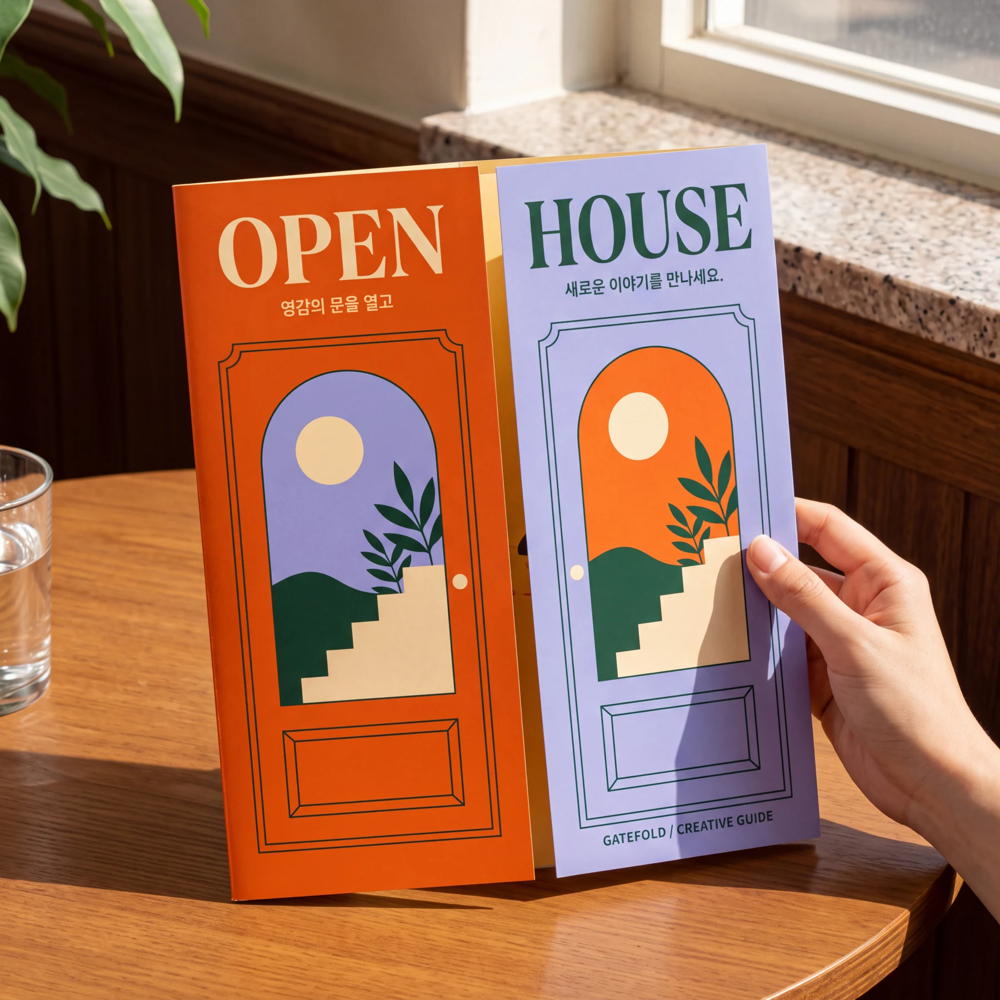
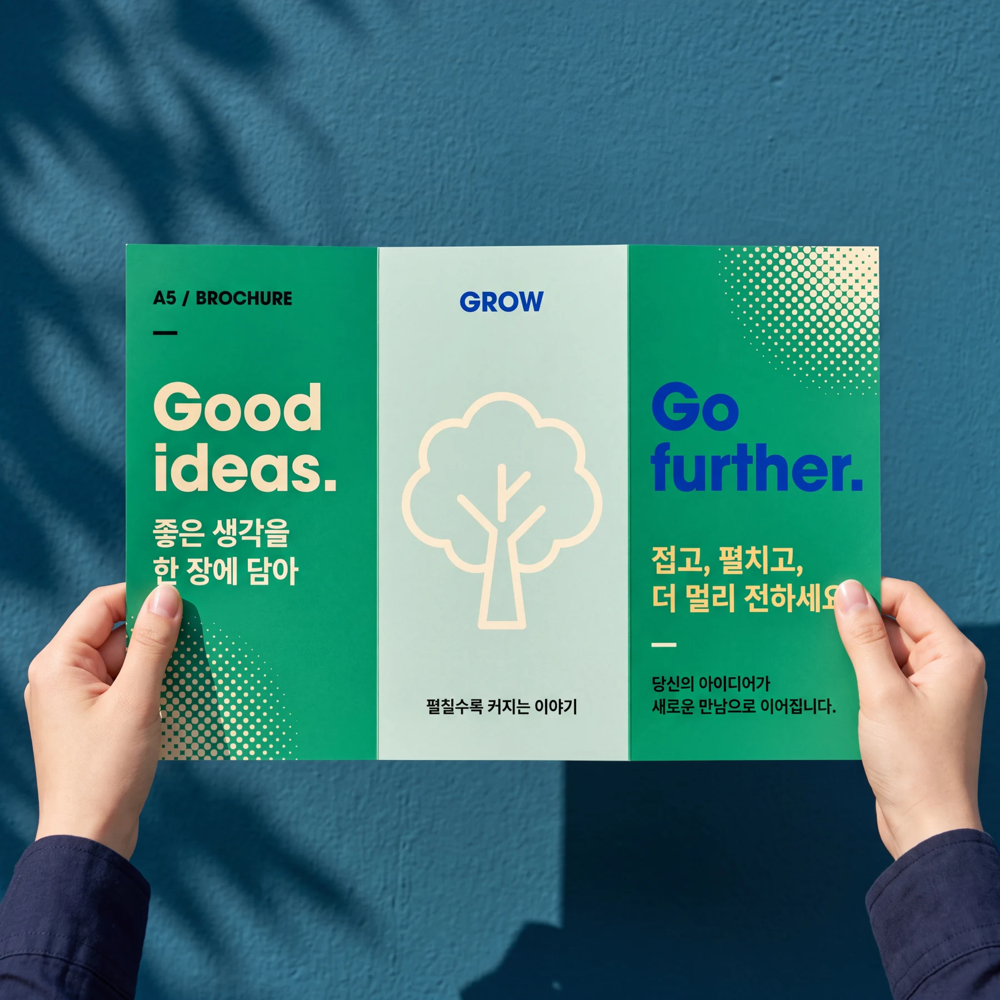
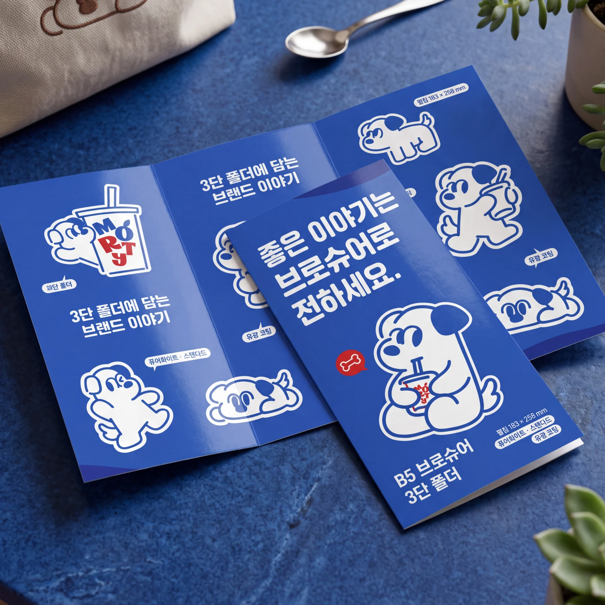
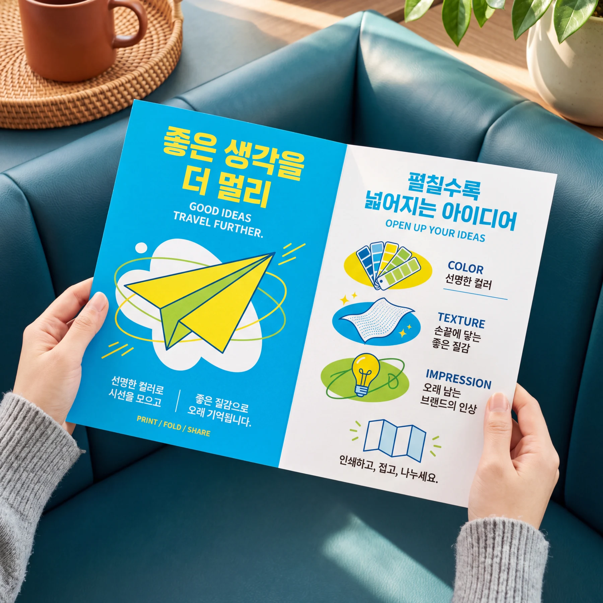
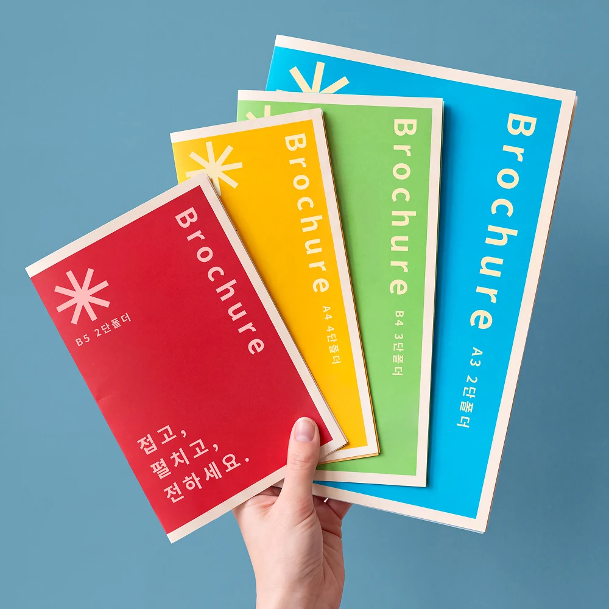
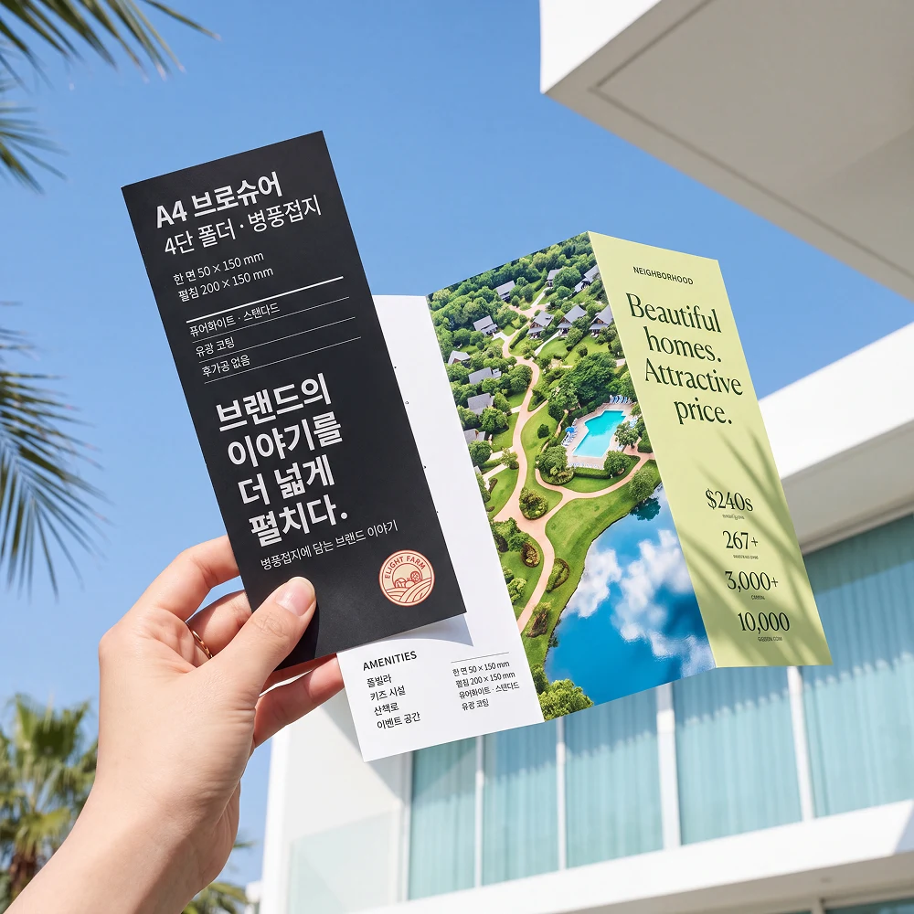
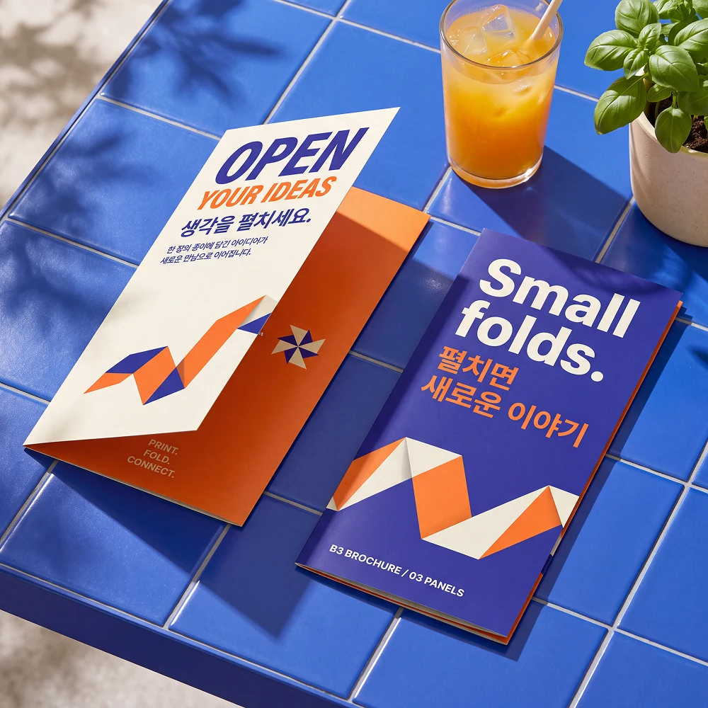
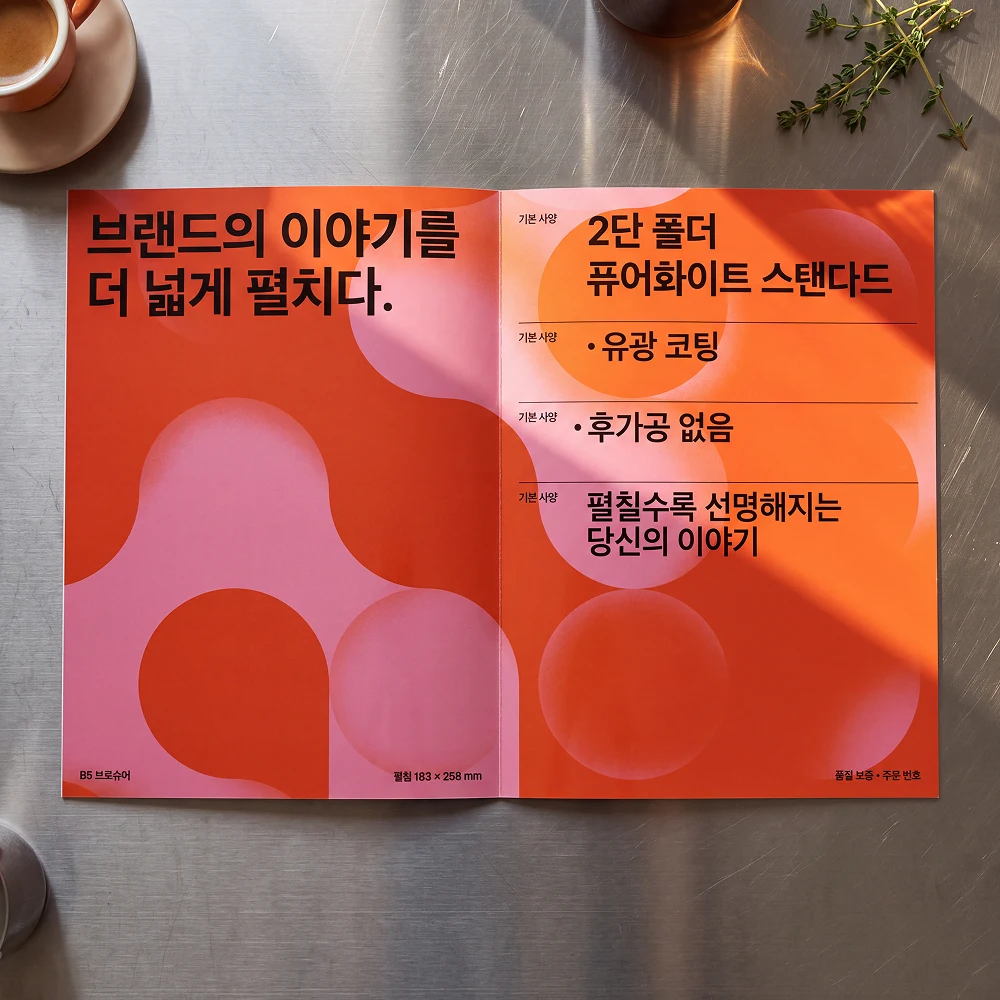
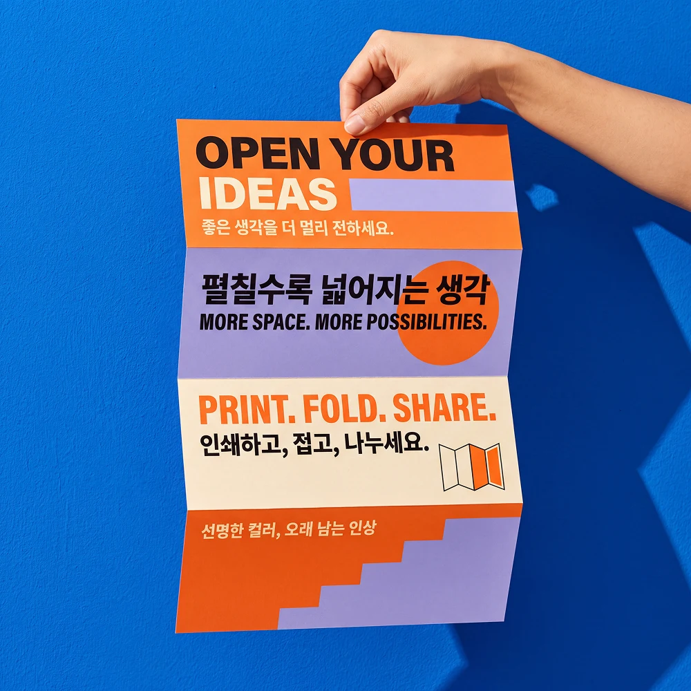

← 모든 작업물AI / 05
AI Automation · Brochure
와우프레스 브로슈어 이미지 제작 자동화
2026- 제작 연도
- 2026
- 작업 기간
- 1일
- 사용 프로그램
- OpenRouter
기여도 및 작업 범위
기여도 100%
브로슈어의 접지 방식과 상품 구성을 보여줄 연출컷, 옵션 이미지, 제작 가이드를 만들었습니다. 반복되는 이미지 제작 작업에 OpenRouter를 연결해 직접 만든 자동화 에이전트를 사용했습니다. 제품에 인쇄된 아트웍 또한 AI 생성이미지입니다.








